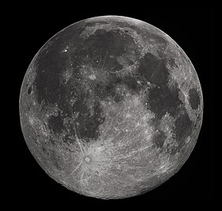

CONHEÇA MAIS SOBRE O UNIVERSO

Lua: o único satélite natural
Conheça mais sobre a Lua, o único satélite natural da Terra.
SAIBA MAISNa astronomia, o Universo corresponde ao conjunto de toda a matéria, energia, espaço e tempo existente. Ele reúne os astros: planetas, cometas, estrelas, galáxias, nebulosas, satélites, dentre outros. O universo é, portanto, mais que um local imenso, ele é tudo, e engloba tudo o que existe. Para muitos, infinito. Note que do latim, a palavra universum significa “todo inteiro” ou “tudo em um só”.
PRINCIPAIS ELEMENTOS DO UNIVERSO: Os corpos celestes mais relevantes que fazem parte do universo são: Planetas: corpos sólidos e arredondados que não possuem luz e calor próprios. No entanto, cada planeta apresenta uma gravidade própria, os quais giram em torno de uma estrela. Satélites naturais: corpos celestes que orbitam os planetas. Galáxias: conjunto de planetas, estrelas e gases. O universo tem aproximadamente 100 bilhões de galáxias. Vivemos na galáxia denominada de Via Láctea, onde está o sistema solar. Cometas: corpos celestes que possuem pouco massa e órbitas irregulares. O mais conhecido é o Cometa Halley. Estrelas: corpos celestes esféricos formado de plasma e que possuem luz e calor próprio, por exemplo, o Sol. Satélites: classificados em satélites naturais e satélites artificiais, os satélites são corpos celestes sólidos que orbitam os planetas. O satélite natural mais conhecido é a Lua e o artificial é o satélite Sputnik. Buracos negros: estão entre os objetos celestes de maior massa que exercem maior gravidade.
CURIOSIDADE: VOCÊ SABIA? A expressão “Universo Paralelo” faz referência a um conceito de física quântica relacionado com a existência de outros universos e outras realidades ainda desconhecidas. Esse conceito está intimamente relacionado com a incompreensão e impossibilidade de assimilar a dimensão do universo.
Conheça mais sobre a Lua, o único satélite natural da Terra.
SAIBA MAISSite de nível iniciante, criado com o intuinto de reforçar o conhecimento e desenvolvimento na área de Front-End, com HTML, CSS e JavaScript.
O site criado foi baseado no Tema: Astronomia por preferencia pessoal. Além disso, com o objetivo de compartilhar informações relacionadas ao Universo.
FONTES:
https://mundoeducacao.uol.com.br/
https://www.todamateria.com.br/
IMAGENS:
//br.pinterest.com/login/